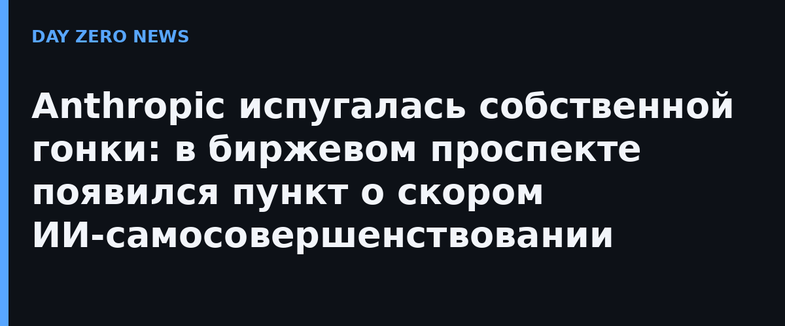

Пока все обсуждали финансовые цифры перед IPO (выручка и расходы растут одновременно), в разделе Risk Factors спряталась куда более интересная формулировка. Anthropic пишет, что «может уже вскоре достичь» определённого в её же Responsible Scaling Policy порога «драматически ускоренного прогресса благодаря ИИ» — состояния, которое компания считает порогом рекурсивного самосовершенствования (RSI). Важная деталь: расчёт сделан по внутренним метрикам и ожиданиям от следующих моделей, а не по существующим. Ни один текущий Claude красную линию пока не пересёк, и базовые данные, по словам компании, ещё пересматриваются.
Второе новое признание звучит сенсационно скромно: компания признаётся, что уже использовала ИИ для разработки новых моделей — и часть скачков возможностей команды… не заметила вовремя. Смысл новой формулировки из файла: чем чаще ИИ-системы ускоряют собственные исследования, тем выше риск, что возможности моделей будут расти быстрее, чем успевают появиться меры безопасности, выравнивания и контроля. Раньше, по словам Anthropic, такие ускорения тоже обнаруживались постфактум.
На этом фоне хорошо читаются прежние отчёты компании: Claude пишет свыше 90% кода в Anthropic и, по сентябрьским данным, ведёт около четверти (26%) исследований моделей. Именно рост доли ИИ в собственных разработках считается главным индикатором движения к RSI. Скептики напоминают: S-1 — документ двойного назначения, он и раскрывает риски, и продаёт инвесторам историю технологического лидерства.
Anthropic подчёркивает: доверять Claude полностью автономно проектировать и улучшать флагманские модели она не собирается — как минимум пока процесс недостаточно понятен и контролируем. Компания уже рассматривает правку собственного Responsible Scaling Policy, чтобы разработка оставалась под человеческим надзором. Отдельная ирония ситуации: главный «тормоз» в гонке описан не внешним регулятором, а внутренним документом самой лаборатории — и именно его обещают пересматривать по ходу дистанции.